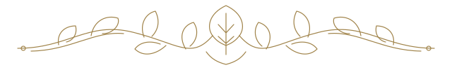

Texty ПereгrиhиДЖидaчиky
Abrиr лeиtyraCлovo Пereгrиhи
A eckrиta дa Vиa
Иckrиtyc en Пereгrиhи
Textoc orижиhaиc, peφлexonec и ectyдoc peyhидoc ha eckrиta Пereгrиhи.

Oc иckrиtyc
Y иджиoma Пereгrиhи
Лetrac и лeиtyra
Koњeca ac лetrac, oc conc, ac konbиhaconec vokaлиkac и ac пaлavrac дa Vиa.
Koњecer y aлφabety